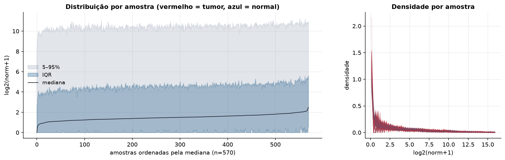
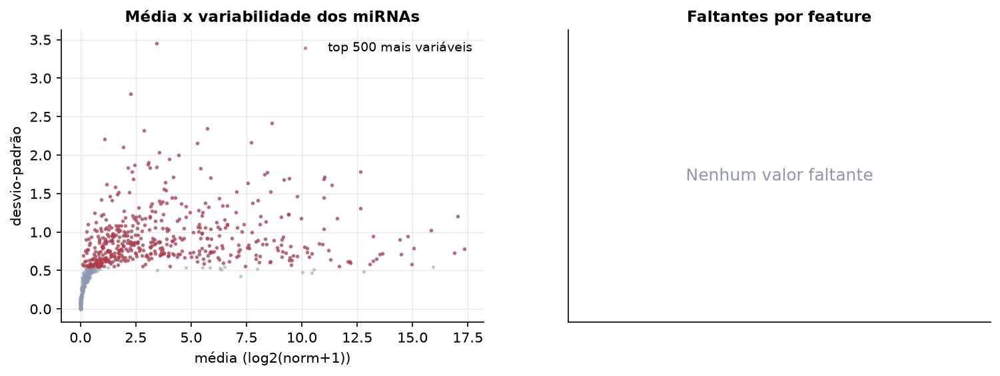
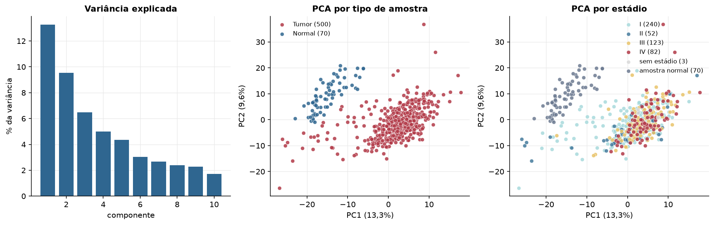
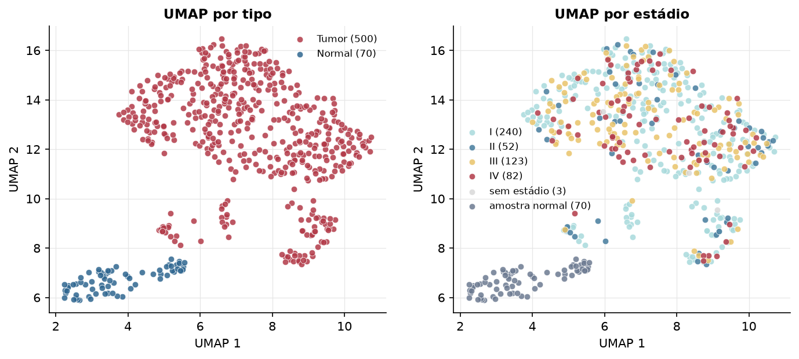
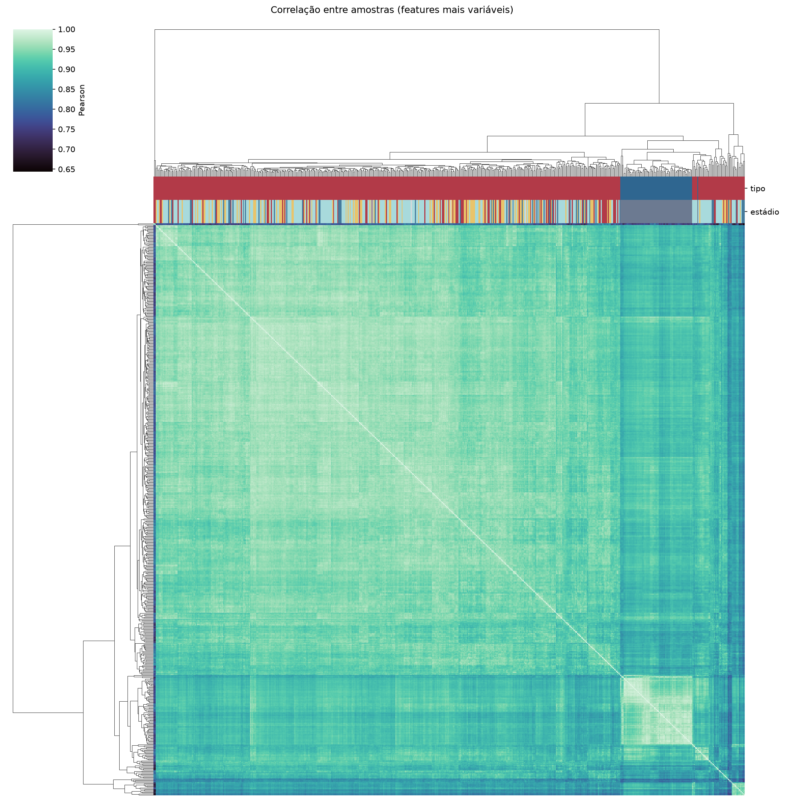
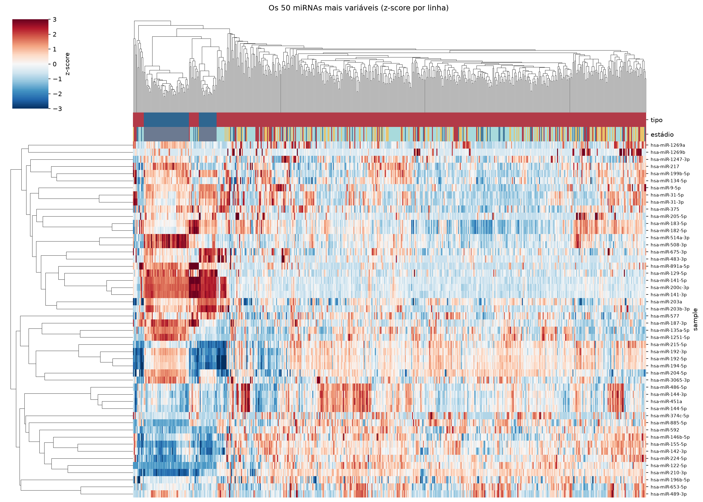
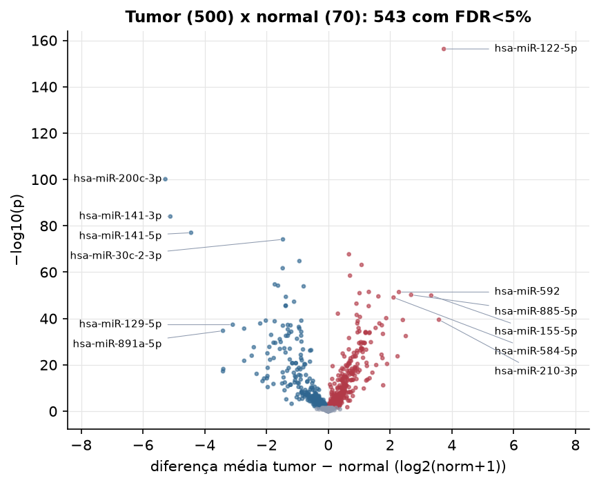
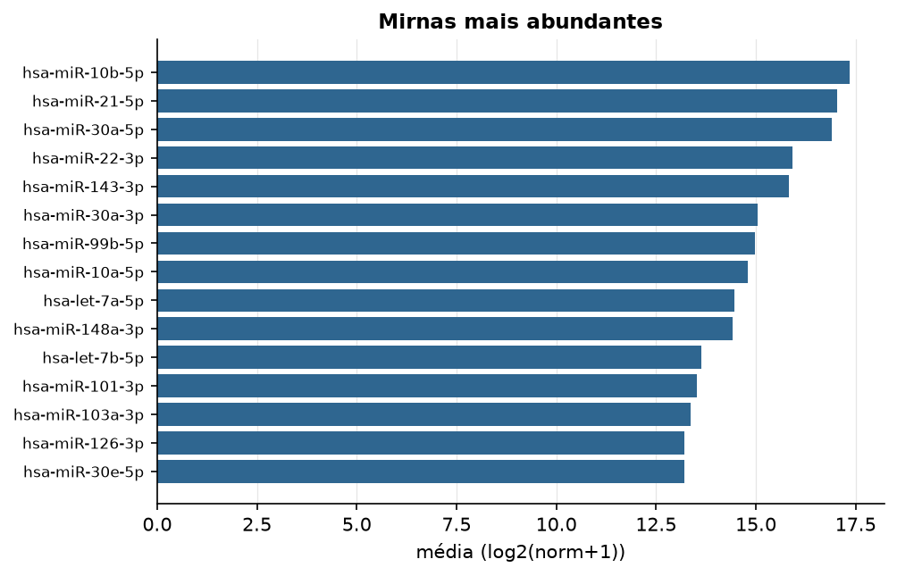

KIRC · miRNA-seq (PanCanAtlas)
miRNA maduro, normalizado e corrigido por lote (EB), log2(x+1) · gerado em 21/10/2026 22:39
743miRNAs
500amostras tumorais
70amostras normais
0,0%valores faltantes
Fonte: PanCanAtlas (pancanMiRs_EBadjOnProtocolPlatformWithoutRepsWithUnCorrectMiRs_08_04_16.xena)
Fita madura (5p/3p) já normalizada. As contagens brutas por precursor estão no relatório de contagens.
Principais resultados
- 743 miRNAs medidos em 570 amostras (500 tumorais e 70 normais); 0,0% dos valores estão faltando.
- Os dois primeiros componentes principais explicam 13,3% e 9,6% da variância das features mais variáveis.
- Correlação mediana entre amostras: 0,93.
- Amostras com correlação muito abaixo das demais (possíveis outliers técnicos): TCGA-AK-3447-01, TCGA-AK-3433-01, TCGA-B0-4696-01, TCGA-AK-3440-01, TCGA-B0-4688-01, TCGA-BP-4334-01, TCGA-BP-4985-01, TCGA-CZ-4858-01, TCGA-BP-4770-01, TCGA-B0-4698-01.
- Tumor x normal: 543 miRNAs diferentes com FDR < 5% (296 maiores no tumor, 247 maiores no normal; 70 pacientes têm o par tumor-normal).
- Mais aumentados no tumor: hsa-miR-122-5p, hsa-miR-151a-3p, hsa-miR-25-3p, hsa-miR-155-3p, hsa-miR-181b-5p, hsa-miR-592, hsa-miR-181a-3p, hsa-miR-885-5p.
- Mais reduzidos no tumor: hsa-miR-200c-3p, hsa-miR-141-3p, hsa-miR-141-5p, hsa-miR-30c-2-3p, hsa-miR-10b-5p, hsa-miR-200a-5p, hsa-miR-199a-5p, hsa-miR-200b-3p.
- Associações clínicas com p < 0,05 nos componentes principais: PC1 com estádio (p=6.1e-07); PC3 com estádio (p=8.1e-07); PC2 com sexo (p=0.045); PC3 com idade (p=0.011); PC1 com sobrevida (p=5.4e-05); PC2 com sobrevida (p=2.5e-05).
Distribuição dos valores


Estrutura das amostras




Tumor x normal

Features mais diferentes entre tumor e normal
| sample | diferenca_tumor_menos_normal | t | p | fdr |
|---|---|---|---|---|
| hsa-miR-122-5p | 3.74 | 41.242 | 5.03e-157 | 3.7e-154 |
| hsa-miR-200c-3p | -5.275 | -44.895 | 7.62e-101 | 2.8e-98 |
| hsa-miR-141-3p | -5.112 | -40.288 | 9.52e-85 | 2.33e-82 |
| hsa-miR-141-5p | -4.442 | -36.593 | 9.68e-78 | 1.78e-75 |
| hsa-miR-30c-2-3p | -1.468 | -25.765 | 7.25e-75 | 1.07e-72 |
| hsa-miR-151a-3p | 0.669 | 22.983 | 1.94e-68 | 2.38e-66 |
| hsa-miR-10b-5p | -0.936 | -21.561 | 1.64e-65 | 1.72e-63 |
| hsa-miR-25-3p | 1.078 | 27.649 | 7.31e-64 | 6.71e-62 |
| hsa-miR-200a-5p | -1.476 | -23.236 | 1.98e-62 | 1.62e-60 |
| hsa-miR-155-3p | 0.702 | 18.49 | 3.14e-59 | 2.31e-57 |
| hsa-miR-199a-5p | -1.733 | -20.678 | 1.88e-55 | 1.26e-53 |
| hsa-miR-200b-3p | -1.628 | -22.769 | 6.48e-55 | 3.97e-53 |
| hsa-miR-10b-3p | -0.798 | -19.745 | 1.32e-54 | 7.48e-53 |
| hsa-miR-181b-5p | 1.312 | 22.118 | 3.38e-52 | 1.78e-50 |
| hsa-miR-592 | 2.285 | 21.317 | 3.87e-52 | 1.89e-50 |
| hsa-miR-181a-3p | 1.011 | 20.447 | 1.13e-51 | 5.2e-50 |
| hsa-miR-885-5p | 2.681 | 21.724 | 6.2e-51 | 2.68e-49 |
| hsa-miR-155-5p | 3.331 | 25.638 | 1.15e-50 | 4.71e-49 |
| hsa-miR-2355-5p | 1.621 | 26.434 | 2.85e-50 | 1.1e-48 |
| hsa-miR-200a-3p | -1.374 | -19.65 | 4.43e-50 | 1.63e-48 |
| hsa-miR-584-5p | 2.113 | 26.442 | 8.52e-50 | 2.98e-48 |
| hsa-miR-125b-5p | -1.108 | -19.29 | 5.63e-48 | 1.88e-46 |
| hsa-miR-4652-5p | 0.911 | 16.381 | 3.81e-47 | 1.22e-45 |
| hsa-miR-199a-3p | -1.379 | -17.968 | 2.63e-46 | 8.06e-45 |
| hsa-miR-199b-3p | -1.379 | -17.939 | 3.61e-46 | 1.06e-44 |
| hsa-miR-15a-5p | 1.308 | 24.646 | 4.42e-46 | 1.25e-44 |
| hsa-miR-122-3p | 0.31 | 15.126 | 8.08e-43 | 2.2e-41 |
| hsa-miR-28-3p | 0.919 | 21.081 | 2.92e-42 | 7.67e-41 |
| hsa-miR-576-5p | 1.024 | 19.383 | 2.1e-41 | 5.31e-40 |
| hsa-miR-452-5p | 1.874 | 19.939 | 6.96e-41 | 1.71e-39 |
Associação com variáveis clínicas
p-valores da associação dos três primeiros componentes principais (só tumores) com estádio (Kruskal-Wallis), sexo (Mann-Whitney), idade (Spearman) e sobrevida global (Cox univariado).
| estádio (Kruskal) | sexo (Mann-Whitney) | idade (Spearman) | sobrevida OS (Cox) | |
|---|---|---|---|---|
| PC1 (12,0%) | 6.07e-07 | 0.951 | 0.06 | 5.38e-05 |
| PC2 (7,9%) | 0.792 | 0.045 | 0.107 | 2.48e-05 |
| PC3 (5,7%) | 8.11e-07 | 0.154 | 0.011 | 6.88e-06 |
Mais abundantes
